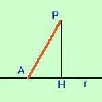

|
Fornisco qui un breve cenno di dinostrazione, ma tu, per esercizio, potresti farne la dimostrazione completa con ipotesi, tesi.... ed anche del teorema inverso  In effetti se consideri il triangolo PHA ha l'angolo in H retto e quindi maggiore degli altri angoli e ad angolo maggiore sta opposto lato maggiore |